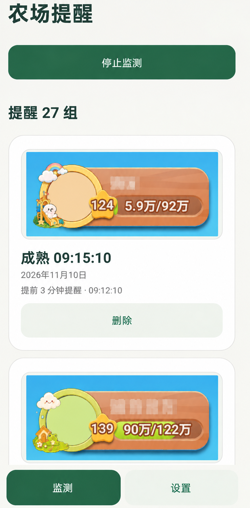
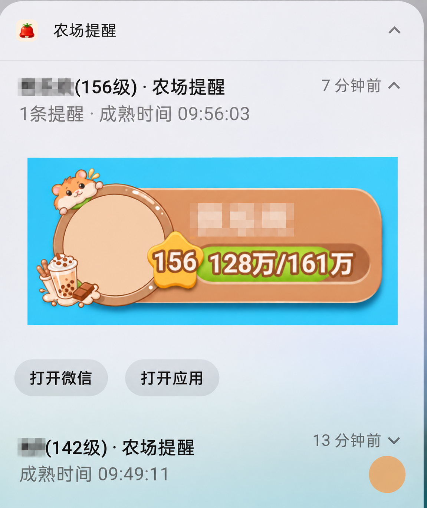

查看截图
纯屏幕文字只读识别 · 本地端侧 Google ML Kit OCR · 绝无网络权限 · 不代收不偷菜 · 安全护航游戏账号
零网络权限 · 纯离线运算 · 支持 Android 11 及以上设备
真机实测效果，直观感受轻量极简的使用体验

进入农场查看作物后，后台自动离线识别文字。不仅精准记录成熟时刻，还自动提取好友头像、农场等级（如 124 级、139 级）与经验进度。

到期前夕系统弹出原生高优先级横幅与轻微振动，标明具体成熟时间与好友农场信息，点击「打开微信」直接返回游戏收菜！
专注把“自动看时间并定闹钟”这一件事做到极致，绝不触碰外挂红线
设备端内置 Google ML Kit 离线文字识别引擎，全程离线运算。应用不声明网络权限（INTERNET），哪怕在飞行模式下依然正常工作，真正做到零数据上传。
纯屏幕文字只读识别，不模拟点击、不代收代偷、不注入游戏代码、不拦截网络封包。本质是一个“能看懂倒计时的贴心闹钟”，符合公平游戏原则。
支持精确到期、提前 1 分钟（默认）、3 分钟、5 分钟智能提醒；调用系统原生高优先级悬浮横幅与振动，点击卡片一键直达微信，抢收快人一步。
提供开箱即用的「使用情况模式」与高阶极速的「Shizuku 模式」。识别完成后即时释放计算资源，不常驻多余占用，省电低功耗。
识别成熟倒计时的同时自动抓取好友头像与等级徽章，提醒列表图文并茂、清晰直观，一眼即可分清是谁的农田即将成熟。
所有截图与提醒日程仅保留在本机私有沙盒存储中。应用支持一键打包导出本地诊断包查验，卸载即完全销毁，不留任何残留。
为什么使用「农场提醒」完全不用担心封号与隐私泄露？
| 关注维度 | ✨ 农场提醒 (本应用) | ⚠️ 传统外挂 / 脚本 / 挂机助手 |
|---|---|---|
| 封号风险 |
零风险 纯屏幕文字只读识别，不模拟点击、不代收代偷、不注入游戏代码，完全由玩家手动收菜，符合公平游戏原则。 |
极高风险 模拟点击、内存注入、协议挂机代偷，极易触发官方行为风控与行为特征检测，导致封号。 |
| 数据隐私 |
零上传 · 100% 离线 内置离线 OCR 识别引擎，无网络权限声明、无任何联网上报接口、无第三方统计 SDK。 |
隐患极大 通常要求登录第三方账号、上传截图至云端服务器解析、甚至收集设备隐私信息。 |
| 系统功耗 |
极轻量 · 低功耗 专注看时间并定闹钟，识别完毕即时释放计算资源，不常驻冗余后台任务，流畅省电。 |
臃肿耗电 长期常驻悬浮窗、滥用无障碍全量事件监听、持续循环消耗手机运存与电池。 |
无缝融入日常游戏习惯，简单三步即可安享准点收菜
初次启动选择前台监测模式（推荐新手的“使用情况模式”或高阶的“Shizuku 模式”），并开启系统的「无障碍截图服务」。
启动监测后打开微信《QQ经典农场》，像平时一样点击作物调出成熟倒计时，应用即自动识别并建立闹钟。
临近成熟前（默认提前 1 分钟），系统弹出高优先级悬浮横幅通知，点击卡片直接一键唤醒微信收菜。
解答您在安装与使用过程中的疑虑
绝无封号风险。游戏官方风控主要打击的是：修改封包数据、内存挂机、自动模拟点击偷菜等破坏游戏平衡的外挂行为。而「农场提醒」本质上只是一个“能看懂屏幕文字的定时便签闹钟”，不向微信/游戏发送任何非法请求，不执行任何自动化代收操作，与您自己看表定闹钟原理完全一致。
绝无数据上传。
android.permission.INTERNET 权限，在操作系统层面就无法向外发送任何数据。国产定制系统（如小米 HyperOS、华为/荣耀 HarmonyOS、OPPO ColorOS、vivo OriginOS 等）后台保活较为严格，请确保进行如下设置：
欢迎加入 QQ 群与玩家和作者直接交流讨论、反馈异常或提出建议：
1135966662